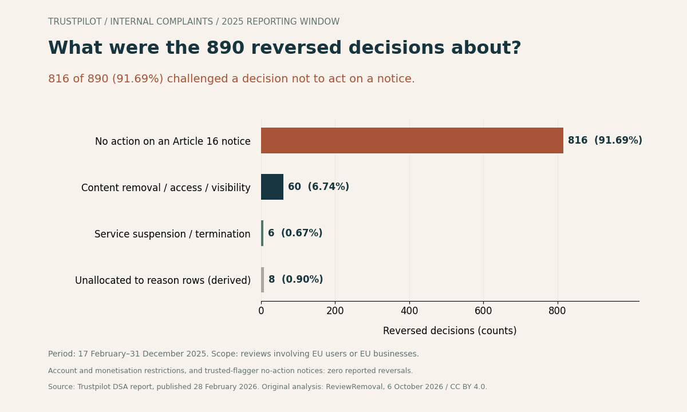

On this page
Trustpilot’s latest published DSA dataset reports 3,458 internal complaints and 890 reversed decisions for February 17–December 31, 2025. The important question is what those decisions concerned: 816 reversals were attached to challenges against a decision not to act on an Article 16 notice.
We downloaded the source files linked from Trustpilot’s legal publications page, reconstructed the outcome table and calculated shares using explicit denominators. This is an original analysis of platform-reported counts, with an eight-row CSV, source-file fingerprint and reproducible calculation script. It is not a study of our clients or a forecast of a particular review’s removal.
Five findings from the source table
- 85.31% of complaints challenged a decision not to take action on an Article 16 notice: 2,950 ÷ 3,458.
- 14.42% of content-restriction complaints had a reversed decision: 60 ÷ 416. The category includes removal, disabled access and restricted visibility; it is broader than deleted reviews.
- The 473 separately labelled omitted decisions do not fit an additive partition of the stated total. We preserve that metric without adding it to the denominator.
Every percentage above is our calculation, rounded to two decimal places. The underlying counts come from the report’s appeals and recidivism CSV in the downloadable report ZIP.
This is an EU-related reporting subset, not Canada or all of 2025
The report-identification file dates publication to February 28, 2026 and the reporting period to February 17–December 31, 2025. Its cover page includes reviews of EU businesses by EU or non-EU users, and reviews of non-EU businesses by EU users. It therefore covers activity with an EU connection, rather than every Trustpilot review worldwide.
A Canadian business may appear in that scope when reviewed by an EU user. This does not turn the counts into a Canadian sample or a Canada-specific removal rate. January and the first part of February 2025 are outside the reporting window.
The previous May 2025 report labelled its appeals table global and covered February 17, 2024–February 16, 2025. Different scope, dates and reporting structure prevent a clean year-over-year success-rate comparison.
Trustpilot appeal outcomes by the decision being challenged
Reported counts and our residual calculation. All reported partially reversed counts are zero; that column is retained in the downloads.
| Challenged decision | Complaints | Upheld | Reversed | Reversal share |
|---|---|---|---|---|
| All internal complaints | 3,458 | 2,568 | 890 | 25.74% |
| Content removal / access / visibility restriction | 416 | 356 | 60 | 14.42% |
| Service suspension / termination | 44 | 38 | 6 | 13.64% |
| Account suspension / termination | 2 | 2 | 0 | 0.00% |
| Monetisation restriction | 0 | 0 | 0 | Not applicable |
| No action on an Article 16 notice | 2,950 | 2,134 | 816 | 27.66% |
| No action on a trusted-flagger notice | 0 | 0 | 0 | Not applicable |
| Unallocated to supplied reason rows (derived) | 46 | 38 | 8 | 17.39% |
Scroll the table sideways to see every column.
The overall row is a summary. Add the six reported reason rows and the derived residual to reproduce it; do not add the overall row again. A zero-case category has no reversal percentage. The two account cases and 44 service cases are small denominators, not reliable predictors.


A reversal does not always mean a review was restored
For a complaint about content being removed or restricted, reversing the decision points toward undoing that restriction. For a complaint about a platform not taking action on a notice, the direction is different: the complainant is challenging inaction. Treating all 890 reversals as restored reviews would erase that distinction.
The source reports 816 newly imposed restrictions following an internal complaint in a separate indicator. That equals the 816 reversals in the no-action-notice category. The agreement is consistent with a reversal of inaction leading to enforcement, but these aggregate tables do not establish one-to-one case matches or say that each restriction was the removal of one negative review.
The no-action-notice reversal share is 27.66% (816 ÷ 2,950). It describes that reported category. It is not the probability that a business will succeed after flagging a review: the report does not identify a business-only cohort, review sentiment, complaint evidence or policy grounds.
The 46 complaints missing from the reason breakdown
The six supplied reason totals add to 3,412, while the overall complaint count is 3,458. We calculate an unallocated residual of 46 complaints, or 1.33% of the stated total. Trustpilot’s contextual note says it could not identify the reason for every appeal.
Subtracting the corresponding outcomes produces 38 upheld decisions and eight reversals. Those reconcile the summary exactly: 2,530 + 38 = 2,568 upheld; 882 + 8 = 890 reversed. The residual is an arithmetic remainder, not an official “unknown reason” category supplied by Trustpilot.
This matters when citing 91.69%: its denominator is the complete 890-reversal headline, including the eight unallocated reversals. Dividing by the 882 reason-assigned reversals would answer a different question and yield a different percentage.
Why we do not add 473 to the complaint total
The source separately lists 473 “Decisions omitted.” But the stated outcomes already reconcile:
2,568 upheld + 0 partially reversed + 890 reversed = 3,458 complaints
Adding 473 would produce 3,931, which is not the stated complaint total. The supplied file does not explain how this omitted metric overlaps the reconciled count. We therefore retain it separately and do not label those decisions as pending, excluded appeals or additional complaints. The same caution applies to constructing a pie chart: 473 is not an extra outcome slice.
What a business owner should record before an appeal
Record the decision being challenged, the review URL, the notification date, the stated reason, relevant evidence and the outcome. A request to reassess a refusal to act and a request to restore removed content belong in different categories. This makes your own case log useful even when a platform-wide number does not match your situation.
Trustpilot’s business guidelines explain its flagging and decision-disagreement process. An appeal needs a relevant policy concern; a negative opinion alone is not evidence that the content should be removed. Our evidence preparation guide and Trustpilot service page provide practical next steps without promising a platform outcome.
Reproduction method and limitations
- Download the DSA report ZIP linked from Trustpilot’s legal page on October 6, 2026.
- Read the cover page and report-identification CSV before interpreting geographic scope or dates.
- Extract the internal-complaint total and six reason categories from
7_appeals_and_recidivism.csv, preserving upheld, partially reversed and reversed counts. - Calculate each share as reversed ÷ complaints × 100. Return no percentage for a zero denominator.
- Compute the residual separately for every outcome column, then verify that reported categories plus residual reproduce the overall row.
- Preserve the omitted-decision and newly imposed restriction indicators outside that partition.
These are observational, self-reported aggregates. They do not measure whether each original moderation decision was objectively correct. We cannot infer reviewer identity, individual cases, Canadian outcomes, negative-review removal rates or causal effects of paying for a service. No confidence intervals are supplied because this is an audit of disclosed totals, not a random sample.
The identification file and cover page say February 17; one qualitative passage says February 18. Our dataset follows the identification dates and documents the discrepancy. We exclude median-time values because the appeals CSV does not state their unit.
Open data, source fingerprint and citation
- Eight-row counts and calculated shares, CSV
- Source definitions, scope and SHA-256 fingerprint, JSON
- Reconciliation and calculation script — run
node audit-trustpilot-appeals.cjsbeside the JSON. - Figure reproduction script — requires Python and Matplotlib; run beside the JSON to write SVG and PNG figures.
- BibTeX citation · Citation File Format
Suggested citation: ReviewRemoval. (2026, October 6). Trustpilot appeals: what 890 reversals actually measure (Version 1.0). ReviewRemoval. Cite this article for the calculations and retain the Trustpilot report citation for the underlying counts.
Our original contribution is the decision-direction analysis, denominator checks, reason-category residual and reusable dataset. Trustpilot published the underlying numbers. An October 6 search for the combined 3,458/890 figures did not locate another indexed analysis matching this audit; that search does not establish that we were first.
Our original compilation, calculations and figure are licensed under CC BY 4.0; Trustpilot’s original material retains its own rights. Attribute ReviewRemoval, link this article and the licence, and identify modifications. Report a suspected data error through the contact information on our about page, specifying the row and source.
Primary sources checked October 6, 2026
- Trustpilot legal publications page, linking the latest DSA transparency report.
- Trustpilot DSA transparency report ZIP, published February 28, 2026: cover page, report identification, appeals and recidivism, and qualitative context.
- Trustpilot May 2025 report, table 4.1, for the earlier report’s explicitly global scope.
- Trustpilot guidelines for businesses, for practical flagging and disagreement guidance.
Need help with a specific review?
Send the platform and the review link. We’ll assess the details and explain the price before paid work begins.
Get help assessing a Trustpilot review